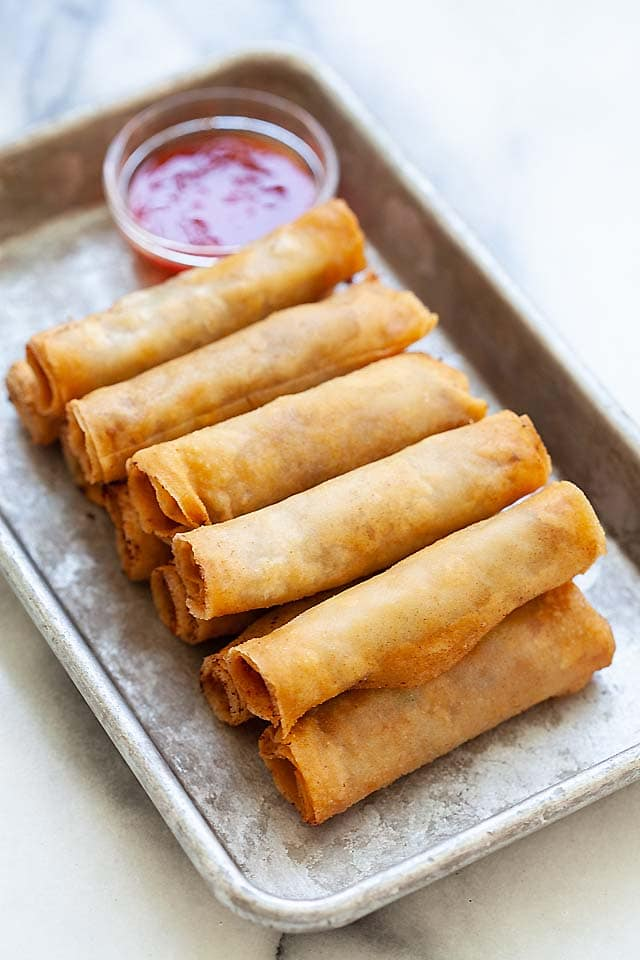

Lumpia Recipe

Description
Lumpia are fried spring rolls that are found in Filipino and
Indonesian cuisines. The rolls traditionally feature a thin pastry
skin (a.k.a. a lumpia wrapper) and are often stuffed with a savory
mixture of ground pork and vegetables.
Ingredients
- 1 tablespoon vegetable oil
- 1 pound ground pork
- ½ cup chopped onion
- 2 cloves garlic, crushed
- ½ cup minced carrots
- ½ cup chopped green onions
- ½ cup thinly sliced green cabbage
- 2 tablespoons chopped fresh cilantro (Optional)
- 1 teaspoon ground black pepper
- 1 teaspoon salt
- 1 teaspoon garlic powder
- 1 teaspoon soy sauce
- 30 lumpia wrappers
- 2 cups vegetable oil for frying, or as needed
Steps
- Heat 1 tablespoon vegetable oil in a wok or large skillet
over high heat. Add pork; cook and stir until crumbly and no pink
is showing, 5 to 7 minutes. Remove pork from the pan and set aside.
Drain grease from the pan, leaving just a thin coating.
- Add onion and garlic to the pan; cook and stir until fragrant,
about 2 minutes. Stir in the cooked pork, carrots, green onions,
cabbage, and cilantro. Season with pepper, salt, garlic powder, and
soy sauce. Remove from the heat, and set aside until cool enough to
handle, about 5 minutes.
- Assemble lumpia: Place 3 heaping tablespoons of filling diagonally
near one corner of a lumpia wrapper, leaving a 1 1/2 inch space at both
ends. Fold the side along the length of the filling over the filling,
tuck in both ends, and roll neatly and tightly to close. Moisten the
other side of the wrapper with water to seal the edge. Transfer to a
plate and cover with plastic wrap to retain moisture. Repeat to
assemble remaining lumpia.
- Heat 1/2 inch vegetable oil in a heavy skillet over medium heat for
5 minutes.
- Slide 3 to 4 lumpia into the hot oil, making sure the seams are
facing down. Fry, turning occasionally, until all sides are golden brown,
1 to 2 minutes. Transfer to a paper towel-lined plate to drain. Repeat to
fry remaining lumpia. Serve immediately.